Inicio
Mentalidad y Desarrollo Personal del Emprendedor
Marketing y Publicidad
Finanzas y Contabilidad para Emprendedores
Administración y Gestión de Proyectos
Emprendimiento con Propósito Social
Tecnología y Recursos Digitales
Contacto
36 temas para ser un emprendedor exitoso
Lo más Reciente
Lo más Popular
Experiencias de otros
Todo
Índice de Temas
1. El Marketing
2. Plan de Marketing
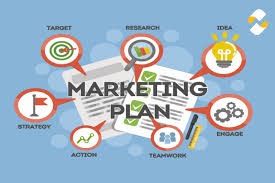
3. Los elementos del marketing mix
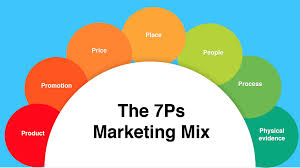
4. Los 3 objetivos fundamentales del marketing
5. Fases del marketing
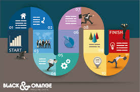
6. El Costeo
7. Liderazgo
8. Libro Caja
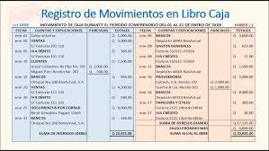
9. La Publicidad
10. Mensajes publicitarios
11. Mercados
12. Mercado
13. Los diez pecados capitales del marketing
14. Los medios publicitarios
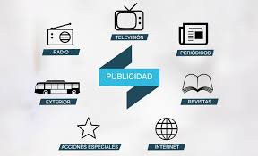
15. Métodos de Valuación de Inventarios
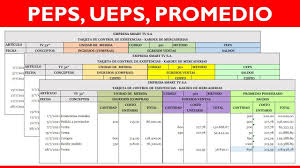
16. Tomar responsabilidad por el aprendizaje
17. Reflexionar y evaluar
18. Aprender a través de la investigación
19. Sinergia
20. Habilidad transferible
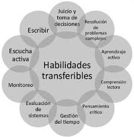
21. Valores personales, familiares y corporativos
22. Producción orgánica de abonos
23. Modelos de planificación y gestión de proyectos educativos
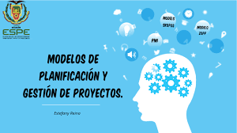
24. Tecnologías digitales en la innovación de proyectos emprendedores
25. Contenidos y recursos digitales para promover proyectos
26. Administración: etapas del proceso administrativo
27. La gestión de proyectos
28. Planeación financiera: etapas de la vida financiera
29. La economía de comunión como alternativa de una mejor sociedad
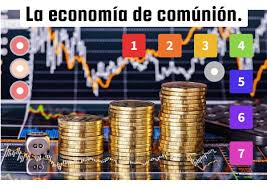
30. Economía solidaria
31. Ahorro e inversión: propósito u objetivo
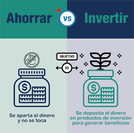
32. Viabilidad y factibilidad de negocios
33. Presupuestos: de gastos, ingresos, ventas, financiamiento
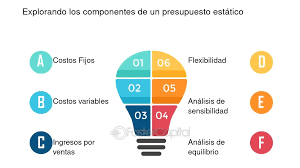
34. Elementos básicos contables
35. Regímenes de tributación
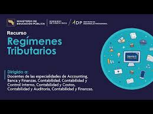
36. Las retenciones, facturación


.jpeg)